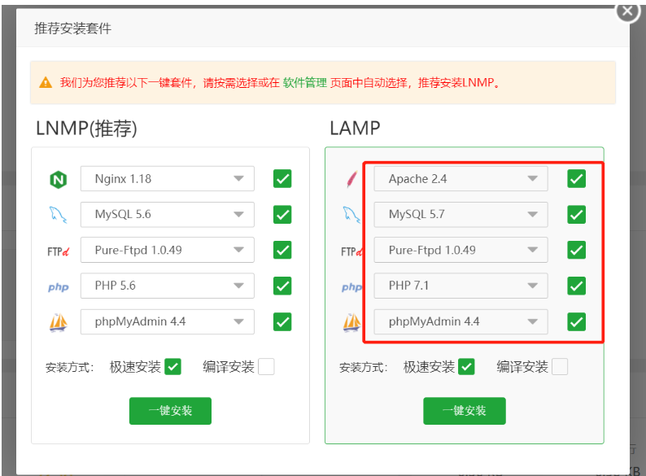
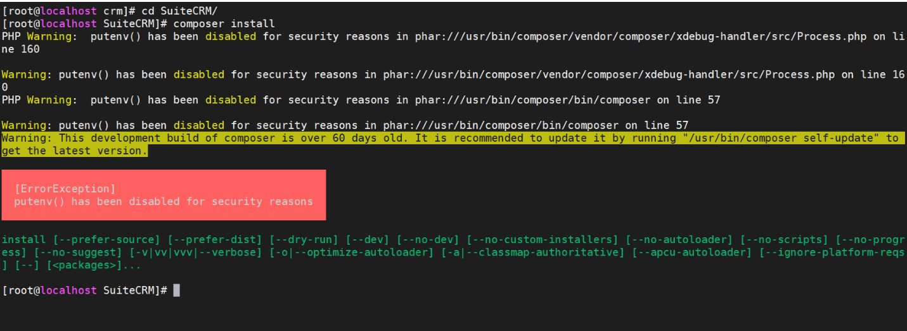
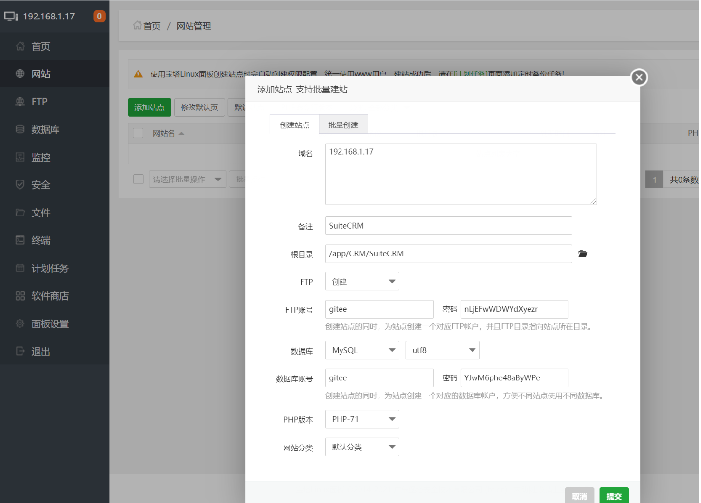
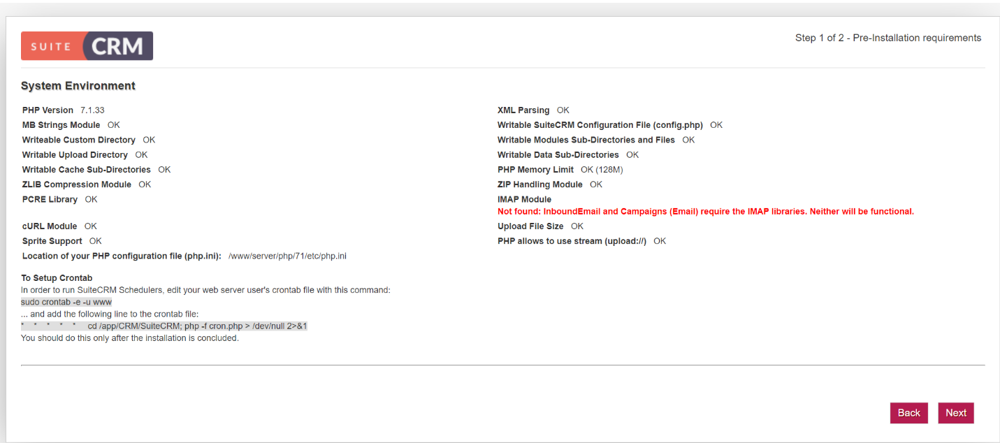

6.6. 宝塔安装CRM系列软件¶
6.6.1. 1.安装宝塔面板¶
使用 SSH 连接工具，如堡塔SSH终端连接到您的 Linux 服务器后，挂载磁盘，根据系统执行相应命令开始安装（大约2分钟完成面板安装）：
Centos安装脚本
*yum install -y wget && wget -O install.sh http://download.bt.cn/install/install_6.0.sh && sh install.sh*
Ubuntu/Deepin安装脚本
*wget -O install.sh http://download.bt.cn/install/install-ubuntu_6.0.sh && sudo bash install.sh*
Debian安装脚本
*wget -O install.sh http://download.bt.cn/install/install-ubuntu_6.0.sh && bash install.sh*
Fedora安装脚本
*wget -O install.sh http://download.bt.cn/install/install_6.0.sh && bash install.sh*
6.6.2. 2.安装LAMP环境¶

6.6.4. 4.安装相关依赖和插件¶

禁用函数中将putenv、exec禁用给去掉。
新增扩展imap、fileinfo
安装php74-php-pecl-zip
yum -y remove libzip5-devel-1.5.2-1.el7.remi.x86_64
yum -y remove libzip5-tools-1.5.2-1.el7.remi.x86_64
yum -y install epel-release
yum -y install http://dl.fedoraproject.org/pub/epel/epel-release-latest-7.noarch.rpm
yum -y install php74-php-pecl-zip.x86_64
yum -y install http://rpms.remirepo.net/enterprise/remi-release-7.rpm
yum install php-zip
# 参考文档
https://www.runoob.com/w3cnote/composer-install-and-usage.html
# 安装相关依赖包
composer install
或者
composer install --ignore-platform-reqs
# 报错处理
https://www.cnblogs.com/richerdyoung/p/10054236.html
# Composer 国内加速，修改镜像源
https://learnku.com/articles/15977/composer-accelerate-and-modify-mirror-source-in-china#replies
http://www.xiegangd.com/article/153440220332395
6.6.5. 5. 添加站点¶


配置配置数据库信息和站点信息
文章来源于《傻猫网络日志》 https://www.samool.com/42278.html